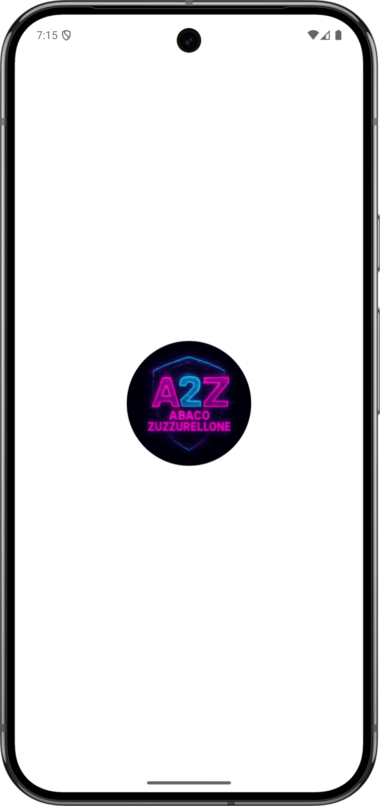

Abaco Zuzzurellone - Mobile Application
Mobile version of the famous game "Abaco-Zuzzurellone"
Dart
Flutter
Mobile version of the famous game "Abaco-Zuzzurellone"
Abaco Zuzzurellone is a mobile adaptation of the classic Italian party game of the same name — a word hunt played entirely by alphabetical order. The app hides a secret Italian word and asks you to find it by narrowing an alphabetical interval that starts, as the name suggests, between abaco and zuzzurellone.
Every guess is compared alphabetically with the hidden word: if it comes before, it becomes the new lower bound; if it comes after, the new upper bound. The playable range shrinks with each attempt until only the secret word is left — a binary search the player runs with their own vocabulary.
The whole game, including a dictionary of about 106,000 words and the artwork, ships inside the app, so it is fully playable offline.
The current interval stays on screen, with the lower and upper bounds in cyan and magenta, above an input field that is always focused: guess after guess never requires leaving the keyboard.
A rejected guess is explained right in the input hint — not a real word, already tried, or outside the interval — and costs nothing. Matching the word opens the victory screen with the attempt count; giving up reveals the word all the same, and both offer an instant rematch.

The app is built with Flutter and Dart as a single cross-platform codebase for Android and iOS. The dictionary is bundled as a plain text asset, loaded once at startup behind a splash screen and reused both to pick the secret word and to validate guesses. Progress is stored on the device, and a small native Android component detects the navigation style to choose the right immersive mode.
Holds the whole game model in a single GameLogic class: random word selection, lexicographic comparison via String.compareTo to move the bounds, guess validation against the dictionary, and the save/load/clear lifecycle.
Provides the four screens (loading, menu, game, victory/defeat) as stateful and stateless widgets with a shared dark ThemeData.
Persists the round across app restarts — bounds, attempts, secret word and the JSON-encoded list of past guesses — plus the flag the menu reads to decide whether to offer "Riprendi Partita".
Pulls the Poppins family into the app-wide text theme, giving every screen consistent typography without shipping font files manually.
A small MainActivity exposes a navigation_mode_channel MethodChannel that reads the Android navigation mode from secure settings, with fallbacks to the system resource config and the navigation-bar height.